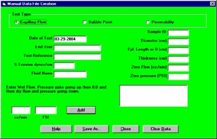

Manual entry of data from other sources is done by using the Manually Create File option from the Modify menu on the CAPWIN Main Screen. Doing so permits you to print reports and graphs comparable to those created from the automatically produced data.
Normally, a Capwin data file is created by testing a sample using the Automated Test procedure. If data has been collected by some other procedure or program, the Manual Creation of a Test File option can be used to manually enter the data into a standard file for use with the CAPWIN software.
Test Type
Depending on the type of test chosen, the options and buttons on the screen will change to reflect the information necessary to create a data file.
Capillary Flow
For determining bubble point, mean flow, cumulative flow and pore size distribution.
Permeability
For determining Darcy's Permeability Constant. For more details see Darcy's Permeability Constant.
Date of Test
Date the test was run.
End User
The person who will be using the particular test parameters created.
Test Reference
A reference number for the test.
Surface Tension (S. Tension dynes/cm)
Surface tension of the fluid. This field is not visible during entry for a permeability test.
Fluid Name
The type of fluid used for the wet testing phase. This changes to Gas Name for the gas permeability test type.
Sample ID
Your sample identification information; used to create a name for the sample being used that will be saved and that can be referenced later.
Diameter (cm)
Diameter of the tested sample. Not used in the bubble point test.
Thickness (cm)
Thickness of the tested sample. Not used in the bubble point test.
Zero Flow (cc/min)
Flow rate at atmospheric pressure Otherwise known as offset flow.
Zero Pressure (psi)
Atmospheric pressure in current units.
The text above the flow and pressure entry fields tells the user what to enter into the given fields. All of the tests require data points in corresponding pairs of pressure and flow rate. Once the points are entered, the data can be used by Caprep for visual or data displays. The two entry fields for data points are:
| cc/min | Flow rate. |
| psi | Pressure. |
The label of this field depends upon the pressure units selected. After entering the data points, either click on the Add button. The data point will then be tested for validity and if it is valid, it will be added it to the data file and will be displayed in the box to the right of the entry fields. In all tests except for the Bubble Point test, the user will be returned to the cc/min field for entry of the next point.
| Help | Starts the CAPWIN Help System. |
| Save As | Saves the values entered to a data file. |
| Close | Closes the Manual Creation of a Test File screen. |
| Clear Data | Clears all inputted data values. |
| Back | Next |